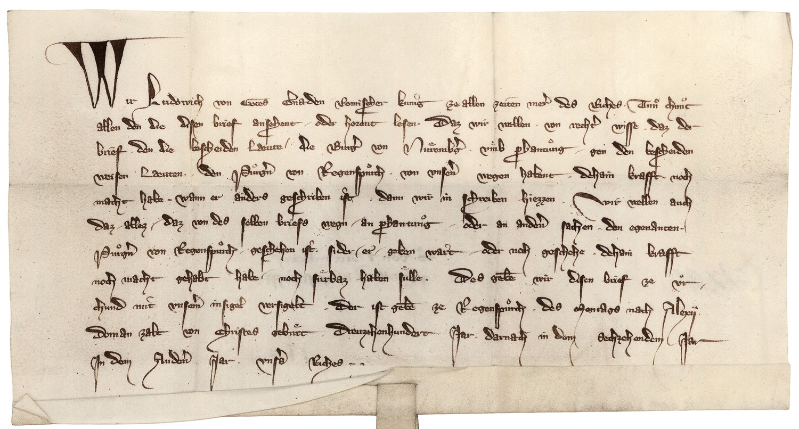

BayHStA, Regensburg Reichsstadt, Nr. 227/ II



Kommentar
Editor: ellen.bosnjak@textgrid.de
Archiv: BayHStA
Bestand: Regensburg Reichsstadt
Signatur: Nr. 227/ II
Ort: Regensburg
Datum: 1316 Juli 19
Schlagwort: Urkunde
Schwierigkeitsgrad: leicht
Kurzbetreff:
König Ludwig der Bayer kassiert eine Urkunde
König Ludwig der Bayer kassiert eine Urkunde
Schreiberhände:
- (S1)
Kommentar:
König Ludwig kassiert eine Urkunde bezüglich der Pfändung Regensburger Bürger durch Nürnberg wegen inhaltlicher Fehler. Pergamenturkunde in Kleinformat mit großem Thronsiegel. Die Urkunde liegt in 4facher Ausfertigung mit differierenden Siegeln vor, davon 2 deutsch und zwei 2 latein.
Gotische Kursive mit Bogenverbindungen, doppelstöckigem a, segelförmigen Oberlängenverschleifungen, dolchförmig zulaufenden f und lange s weit in die Unterlänge, mit h, dessen zweiter Schaft in die Unterlänge gezogen und nach rechts umgebogen ist, und aus der Unterlänge nach oben gezogenen Anstriche bei w und v.
Punkte, die als Hinweise für die Aussprache zu verstehen sind, wurden in der Entzifferung weggelassen.
König Ludwig kassiert eine Urkunde bezüglich der Pfändung Regensburger Bürger durch Nürnberg wegen inhaltlicher Fehler. Pergamenturkunde in Kleinformat mit großem Thronsiegel. Die Urkunde liegt in 4facher Ausfertigung mit differierenden Siegeln vor, davon 2 deutsch und zwei 2 latein.
Gotische Kursive mit Bogenverbindungen, doppelstöckigem a, segelförmigen Oberlängenverschleifungen, dolchförmig zulaufenden f und lange s weit in die Unterlänge, mit h, dessen zweiter Schaft in die Unterlänge gezogen und nach rechts umgebogen ist, und aus der Unterlänge nach oben gezogenen Anstriche bei w und v.
Punkte, die als Hinweise für die Aussprache zu verstehen sind, wurden in der Entzifferung weggelassen.
Entzifferung
(Absatz Beginn)
1 Wir Ludowich von Gotes Gnaden Romischer kunig ze allen zeiten mer(er) des Riches, Tn chnt
2 allen den die disen brief ansehent oder horent lesen, Daz wir wellen von recht(er) wisse, daz der
3 brief den die bescheiden Læute, die Burg(er) von Nremb(er)g mb phantng gen den bescheiden
4 weisen Læuten, den Prg(er)n von Regensprch, von vns(er)en wegen habent, dehain krafft, noch
5 macht habe, wann er anders geschriben ist, dann wir in schreiben hiezzen. Wir wellen auch
6 daz allez daz von des selben briefs wegn an phantng oder an and(er)en sachen den egenanten
7 Prg(er)n von Regensprch geschehen ist, sider er geben wart oder noch geschehe, dehain krafft
8 noch macht gehabt habe noch frbaz haben slle. Des gebe(n) wir disen brief ze r-
9 chund mit vns(er)em insigel versigelt. Der ist gebe(n) ze Regensprch, des Montags nach Alexij.
10 Doman zalt von Christes gebrt Dreuzehenhundert Jar, darnach in dem sechzehendem Jar
11 Jn dem And(er)en Jar vns(er)s Riches
(Absatz Ende)
Transkription
(Absatz Beginn)
1 Wir, Ludowich, von gotes gnaden romischer kunig, ze allen zeiten merer des riches, tn chnt
2 allen den, die disen brief ansehent oder horent lesen, daz wir wellen von rechter wisse, daz der
3 brief, den die bescheiden laeute, die burger von Nremberg, mb phantng gen den bescheiden
4 weisen laeuten, den prgern von Regensprch, von vnseren wegen habent, dehain krafft noch
5 macht habe, wann er anders geschriben ist, dann wir in schreiben hiezzen. Wir wellen auch
6 daz allez, daz von desselben briefs wegn an phantng oder an anderen sachen den egenanten
7 prgern von Regensprch geschehen ist sider er geben wart oder noch geschehe, dehain krafft
8 noch macht gehabt habe, noch frbaz haben slle. Des geben wir disen brief ze r-
9 chund; mit vnserem insigel versigelt. Der ist geben ze Regensprch des montags nach Alexij
10 do man zalt von Christes gebrt dreuzehenhundert jar, darnach in dem sechzehendem jar,
11 in dem anderen jar unsers riches.
(Absatz Ende)